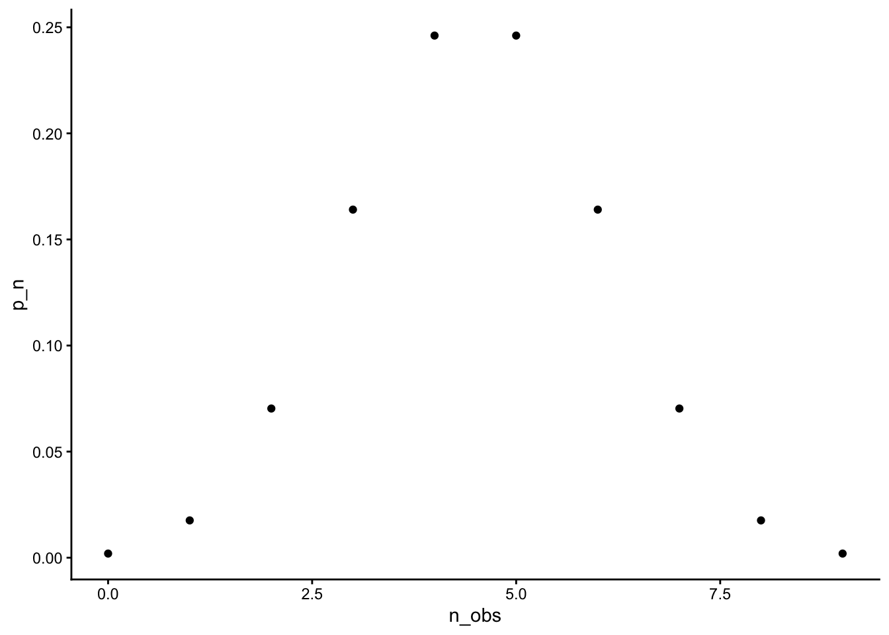
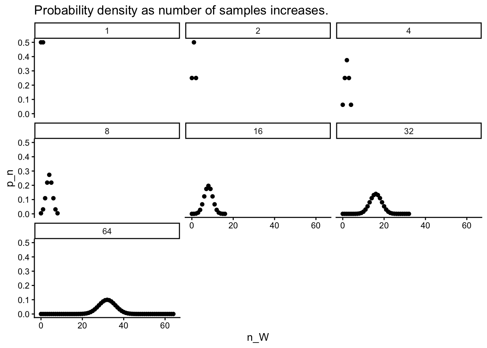

Code
suppressPackageStartupMessages(library(ggplot2))This page summarizes work related to chapters 1-3 of Statistical Rethinking (2020).
Source libraries for more efficient and readable code.
suppressPackageStartupMessages(library(ggplot2))See (2020, pp. 32–35).
\[ Pr(W,L|p)=\frac{(W+L)!}{W!L!}p^W(1-p)^L \tag{1}\]
The probability of \(W\) and \(L\), conditional on \(p\) is defined by the formula in Equation 1.
The dbinom() function computes this binomial probability. To compute the probability of observing \(x=6\) \(W\)s in 9 globe tosses with \(p=4\), we proceed as indicated below:
```{r}
#| code-fold: false
dbinom(x = 6, size = 9, prob = 0.5, log = FALSE)
```[1] 0.1640625So, to compute the binomial probabilities for observing all \(n+1\) possible cases, we proceed as follows:
```{r}
#| code-fold: false
# Generate the data
n_W <- 0:9
p_n <- purrr::map(n_W, dbinom, size = 9, prob = 0.5, log = FALSE) |>
purrr::list_c()
like_1 <- data.frame(n_obs = n_W, p_n = p_n)
# Plot the data
like_1 |>
ggplot() +
geom_point(aes(x = n_obs, y = p_n)) +
theme_classic()
```
To produce a set of binomial plots based on increasing numbers of samples, we proceed as follows.
```{r}
#| code-fold: false
# Generate the data
n_samples <- c(1, 2, 4, 8, 16, 32, 64)
how_many_W <- function(n) 0:n
n_W <- purrr::map(n_samples, how_many_W) |>
purrr::list_c()
n_states <- rep(n_samples, n_samples+1)
n_states
p_n <- purrr::map2(n_W, n_states, dbinom, prob = 0.5, log = FALSE) |>
purrr::list_c()
like_2 <- data.frame(n_states = n_states, n_W = n_W, p_n = p_n)
``` [1] 1 1 2 2 2 4 4 4 4 4 8 8 8 8 8 8 8 8 8 16 16 16 16 16 16
[26] 16 16 16 16 16 16 16 16 16 16 16 32 32 32 32 32 32 32 32 32 32 32 32 32 32
[51] 32 32 32 32 32 32 32 32 32 32 32 32 32 32 32 32 32 32 32 64 64 64 64 64 64
[76] 64 64 64 64 64 64 64 64 64 64 64 64 64 64 64 64 64 64 64 64 64 64 64 64 64
[101] 64 64 64 64 64 64 64 64 64 64 64 64 64 64 64 64 64 64 64 64 64 64 64 64 64
[126] 64 64 64 64 64 64 64 64 64like_2 |>
ggplot() +
geom_point(aes(x = n_W, y = p_n)) +
facet_wrap(n_states, ncol = 3) +
theme_classic() +
ggtitle("Probability density as number of samples increases.")
So, this figure isn’t quite what I want. But it’s a start.